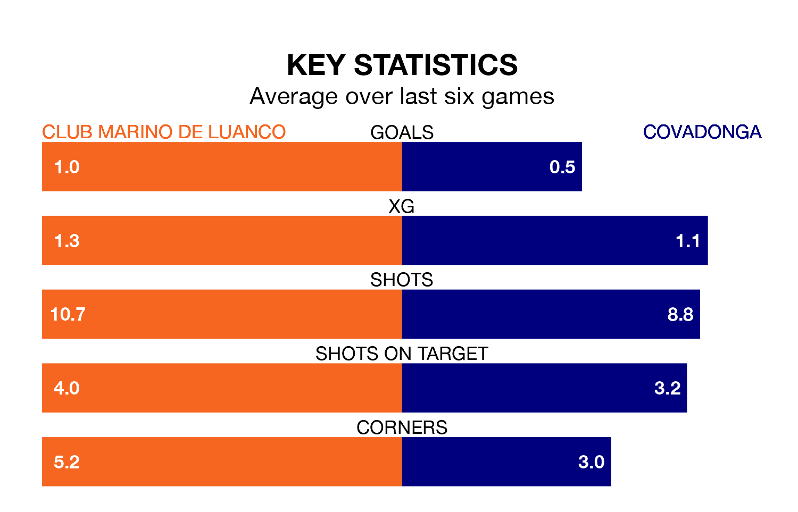

Covadonga come to Estadi Municipal de Miramar to play Club Marino de Luanco on early Sunday in poor form, having collected just three points from their last six games.
The visitors have won just one of their last six fixtures, while Club Marino de Luanco have two wins and a draw.
Covadonga are bottom of the table after 33 games, of which they have won seven and drawn eight, earning 29 points.
Club Marino de Luanco are five places ahead of the away side in 13th, with eight wins and 15 draws putting them on 39 points.
With 26 goals in 33 games so far this season, the hosts are the league's joint-third-lowest scorers with 0.8 goals per game. But they are conceding fewer than average too, letting in 24 goals at a rate of 0.7 per game.
Covadonga are also below average scorers, with 1.1 goals per game, compared to a league average of 1.2. They have conceded 1.7 goals per game.
Club Marino de Luanco's last match was on April 28, a 2-1 loss against Arandina CF, with Diego Díaz Álvarez getting the goal for Club Marino de Luanco.
Covadonga lost 2-0 against Racing Santander B last time out, also on April 28.
Updated: 12:00 (UTC), 02/05/24